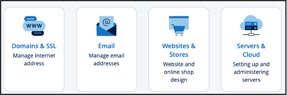
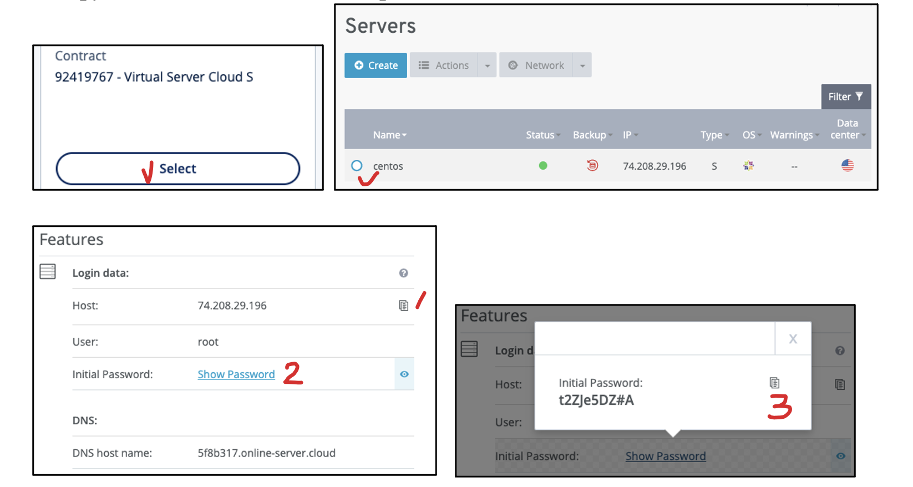

1.4. Connecting to Your Virtual Machine (VM)
1.4.1. Assignment Instruction
Assignment Instruction
This instruction shows you how to connect to your server, a virtual machine (VM) host computer from your VPS subscription. We will use the ssh command to connect to your VM server from your local “client” computer (laptop, desktop, or tablet).
1.4.2. Getting Started
Getting Started
Access VPS Server Management Page:
Step 1/4
Log into https://ionos.com/ and you will be redirected to your product page (e.g., https://my.ionos.com/product-overview). Click to choose the Servers and Cloud tile.
{kind=link}
Access Root User Account Information:
Step 2/4
Select your VPS plan to enter the administration page. Choose the name of your VM (“centos” in this example but you should see “Ubuntu”) to show the Features. We need two pieces of information to remotely access and manage your VM server: 1) host IP address and 2) “root” user password. Keep this page open and we will use the copy icon to copy them for use in the next step.
{kind=link}
Open the Terminal Application:
Step 3/4
Open a terminal from your personal computer to access the VM:
macOS: Launch the Terminal.app (Command+Space, type to choose Terminal.app, and enter)
Windows: Execute the Windows PowerShell program (Win key+R then type PowerShell and Enter)
{kind=link}
Connect to VM Using SSH:
Step 4/4
Type
ssh root@VM_IP_ADDRESSat the command prompt (leave a space after the ssh command) and press Enter.Answer “yes” (“yes,” not “Y” or “y”) to the security prompt (“The authenticity…”) to connect to the VM.
Copy and paste your password when prompted and press Enter (you will not see anything when pasting/typing the password: no news is good news).
You are now logged into the VM as the root user and should see the command prompt
root@localhost:~$, where you can type your commands to operate the VM.
{kind=link}
Note
The “root” user: We DO NOT usually use the root user account when using Unix-like operating systems. In our case here, it is provided by the hosting company for us to start configuring the VM.
Secure Shell (SSH): The SSH protocol is a network protocol that encrypts communication between computers. Many computers have both SSH client and server applications installed by default for us to connect to and run commands on a remote computer.